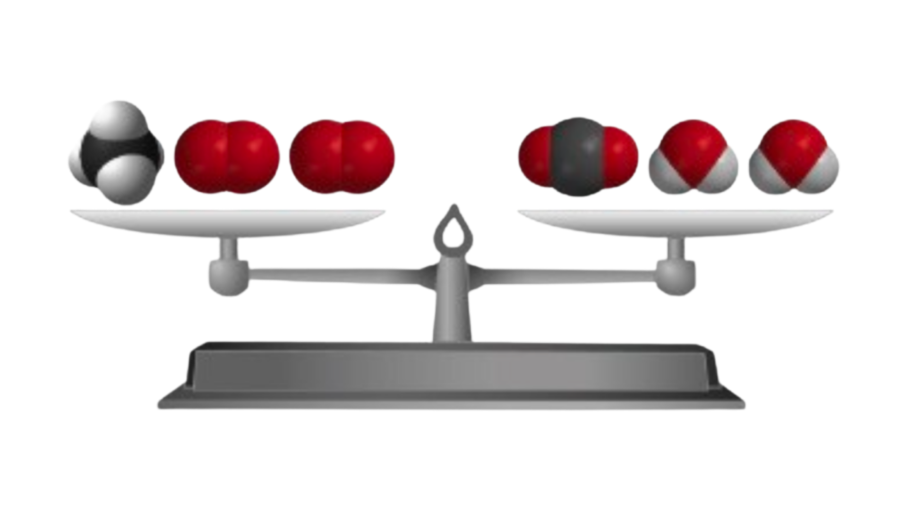

<h1 id="page-title-node-content" class="page-title" data-testid="page-title" style="accent-color: rgb(11, 161, 161); background-color: rgb(255, 255, 255);">Principio de conservación de la materia</h1>
⚖️ Principio de conservación de la materia
En una reacción química, la materia no se crea ni se destruye: solo se transforma.
Ley de Lavoisier
Antoine Lavoisier demostró que, en toda reacción química, la masa total se conserva. Esto significa que la masa de las sustancias iniciales es igual a la masa de las sustancias finales.

| CH4 | + | 2 O2 | → | CO2 | + | 2 H2O |
| 1 molécula | 2 moléculas | 1 molécula | 2 moléculas | |||
| 1 mol | 2 moles | 1 mol | 2 moles | |||
| 16,05 g | 64 g | 44,01 g | 36,04 g | |||
| 80,05 g de reactivos | → | 80,05 g de productos | ||||
La primera fila representa moléculas, la segunda moles y la tercera masas en gramos. Observamos que la masa total de los reactivos es exactamente igual a la masa total de los productos.
¿Por qué se cumple?
Esto ocurre porque los átomos no desaparecen ni aparecen de la nada. Durante la reacción, los átomos simplemente se reorganizan y se unen de otra forma para formar sustancias nuevas.
📌 Idea clave
En una reacción química, puede variar el número de moles y moléculas a lo largo de la reacción pero, la cantidad total de materia permanece constante, es decir, el número de átomos es el mismo durante toda la reacción.